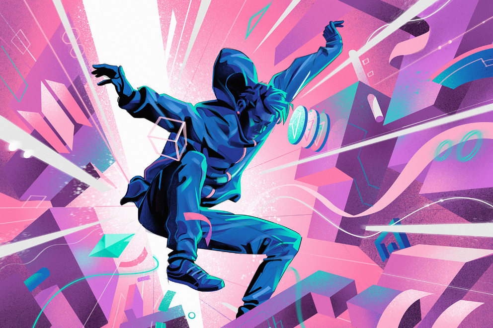
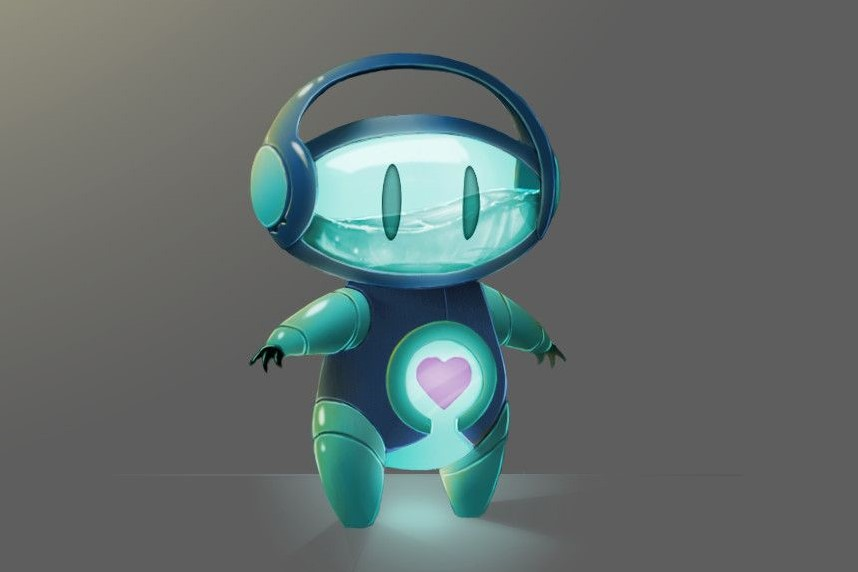

O que é o metaverso?
Eventos de inovação, desfiles de moda, shows virtuais, produtos para avatares: nos últimos meses, ficou quase impossível não ouvir em algum momento a palavra metaverso.
Saiba MaisGod of War 5
A Sony anunciou nesta segunda-feira (17) uma lista com os 22 jogos mais aguardados que serão lançados este ano para PS4 e PS5. Através do blog oficial, ela destacou God of War Ragnarok na 5º posição da lista, confirmando a previsão de lançamento para 2022.
Saiba MaisOlimpiada Brasileira de robotica
A Olimpíada Brasileira de Robótica (OBR) é uma das olimpíadas científicas brasileiras que utiliza-se da temática da robótica. Tem o objetivo de estimular os jovens às carreiras científico-tecnológicas, identificar jovens talentosos e promover debates e atualizações no processo de ensino-aprendizagem brasileiro.
Saiba MaisLove death and robots
A Netflix liberou o primeiro episódio da terceira temporada da série antológica Love, Death & Robots no YouTube. Os Três Robôs é a sequência de um dos episódios da primeira temporada e acompanha o trio protagonista em uma nova jornada para tentar entender um pouco mais da humanidade.
Saiba Mais